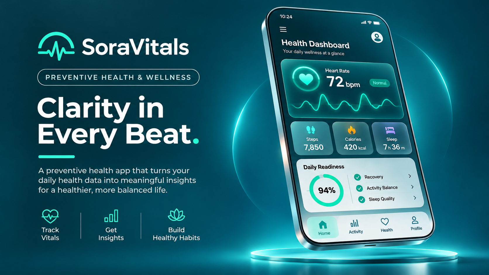
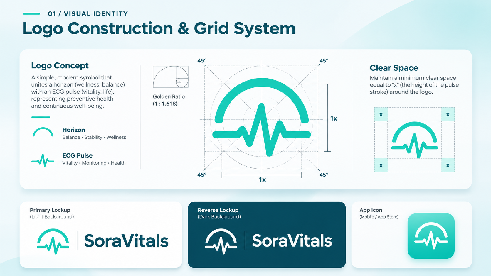
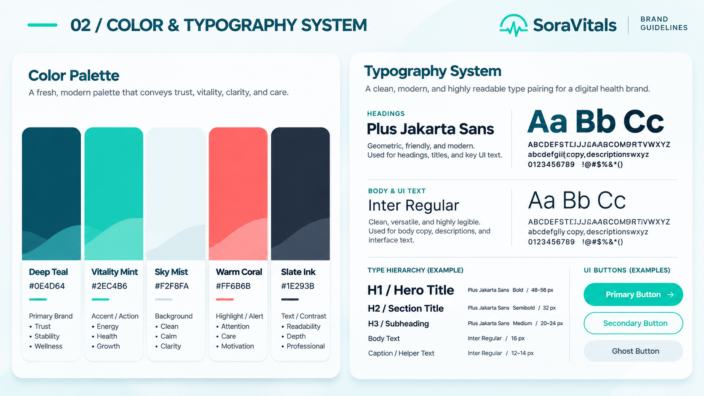
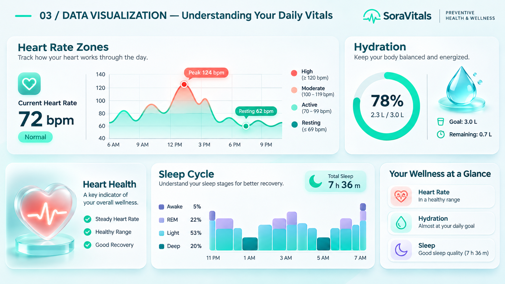
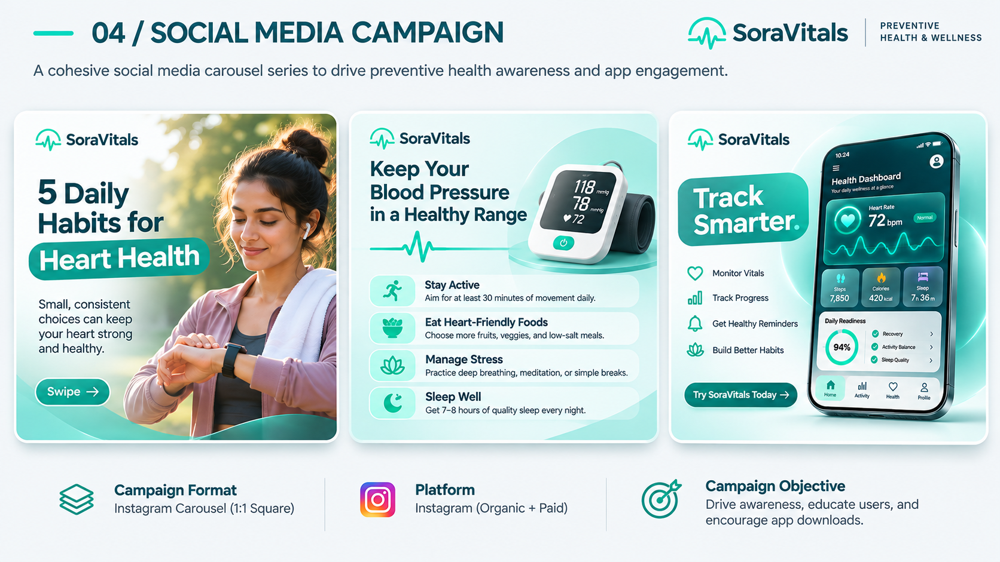
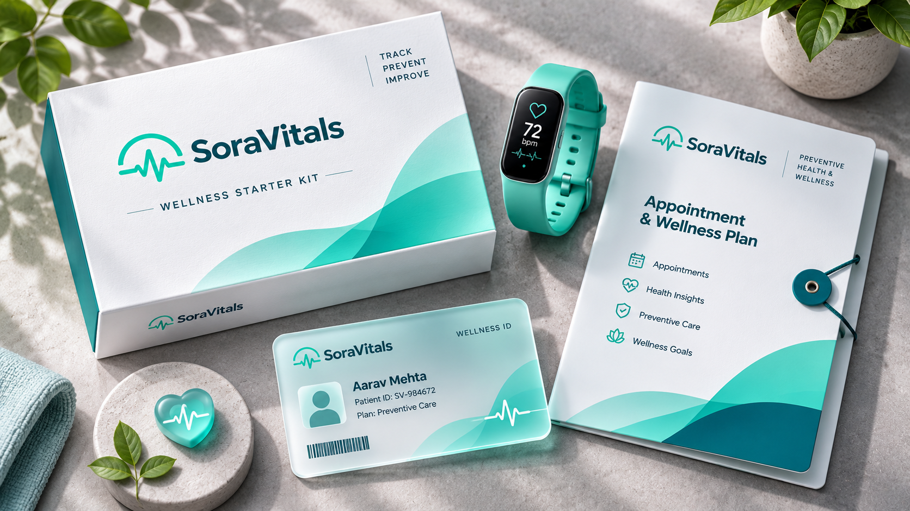

SoraVitals is a modern preventive healthcare and smart vitals-tracking concept built to transform complex daily health metrics into calm, easy-to-read visual guidance. The visual identity combines trustworthy deep ocean teal with uplifting aqua-mint accents, clean geometric typography, and accessible patient infographics.





